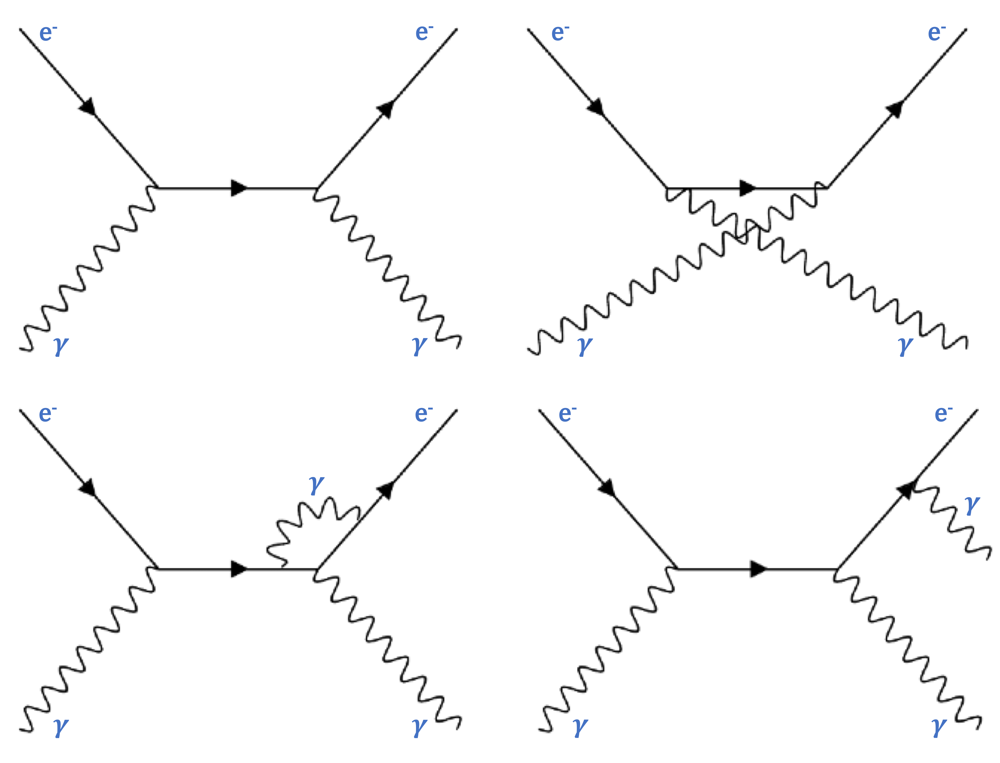
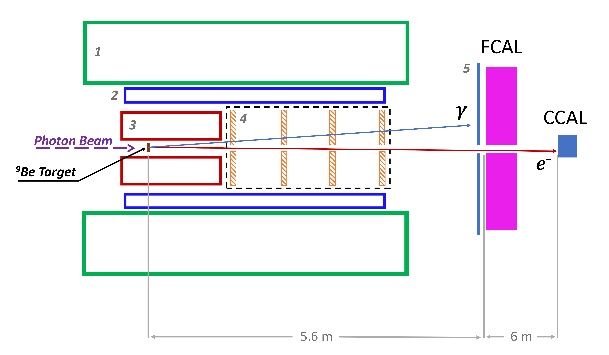
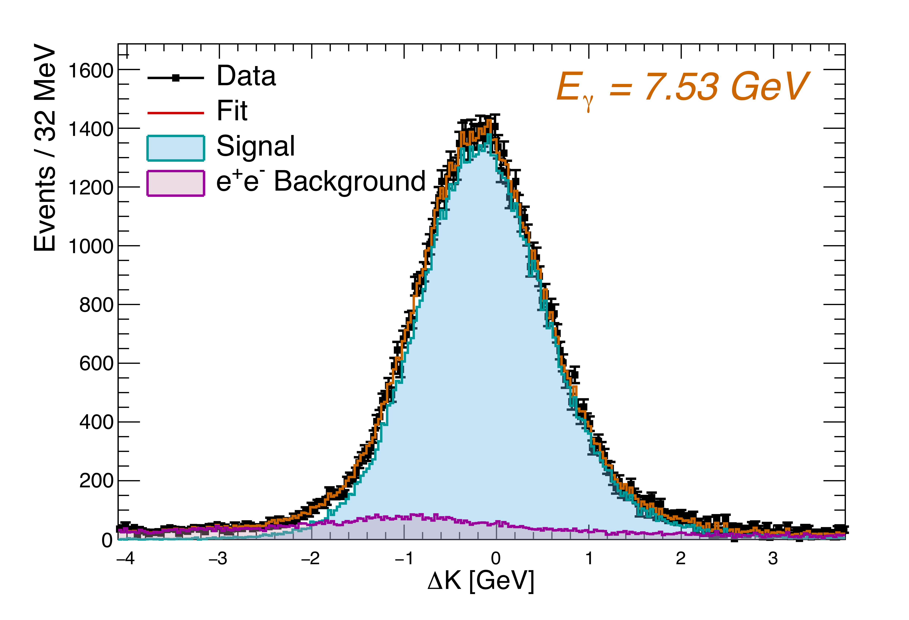
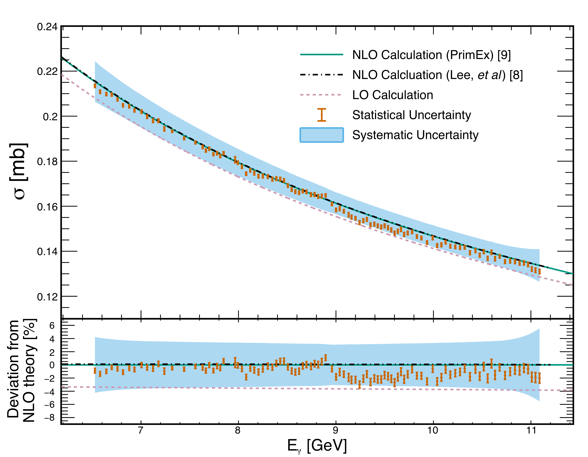

First Measurement of the Total Compton Scattering Cross Section between 6 and 11 GeV
Abstract:
The total cross section for Compton scattering off atomic electrons, $\gamma+e\rightarrow\gamma'+e'$, was measured using photons with energies between 6.5 and 11.1 GeV incident on a $^9$Be target as part of the PrimEx-$\textit{eta}$ experiment in Hall D at Jefferson Lab. This is the first measurement of this fundamental QED process within this energy range. The total uncertainties of the cross section averaged to 3.4% across all energy bins. This not only demonstrates the capability of this experimental setup to perform precision cross-section measurements at forward angles but also allows us to compare with state-of-the-art QED calculations.Journal: Phys. Lett. B 870 (2025) 139914
arXiv: arXiv:2505.07994
HEPdata: link
|

Phys. Lett. B 870 (2025) 139914: downloads png pdf |
Figure 1:
Top, The lowest-order Feynman diagrams for single Compton scattering. Bottom Left, Typical NLO radiative-correction diagram. Bottom Right, NLO double Compton scattering diagram. |
|

Phys. Lett. B 870 (2025) 139914: downloads png pdf |
Figure 2:
Detector layout for the PrimEx-$\textit{eta}$ experiment. Numbered components include (1) solenoid magnet, (2) barrel electromagnetic calorimeter, (3) central drift chamber, (4) forward drift chambers, and (5) time-of-flight wall. The scattered photons and electrons from Compton scattering events were detected by the Forward Calorimeter (FCAL) and the Compton Calorimeter (CCAL). Not drawn to scale. |
|

Phys. Lett. B 870 (2025) 139914: downloads png pdf |
Figure 3:
Example of a fit to the $\Delta K$ distribution to extract the Compton yield in one bin of the energy $E_{\gamma}$ of the (tagged) beam photon (here, 7.53 GeV). See Eq. (3) for the definition of $\Delta K$. Backgrounds from beam-line components and accidentals in the photon tagger have already been subtracted. The remaining background (shown in magenta) is estimated from simulation of $e^{+}e^{-}$ pair production in the target, and the signal line shape (blue) is estimated from the simulation of the Compton scattering signal. |
|

Phys. Lett. B 870 (2025) 139914: downloads png pdf |
Figure 4:
Total Compton scattering cross section measured on atomic electrons of the $^{9}$Be target. The green solid curve corresponds to the NLO calculation performed as part of this work, and the black dash-dotted curve is taken from Ref. [8]. The pink short-dashed line represents the total cross section at LO, obtained by integrating the Klein-Nishina formula in Eq. (1). Error bars on each point represent statistical uncertainties, whereas the light-blue band, centered at the NLO calculation, represents the total systematic uncertainty. The bottom plot shows the relative difference (in percentage) between the measured values and the NLO calculation. |
{kind=link}
{kind=link}
{kind=link}
{kind=link}